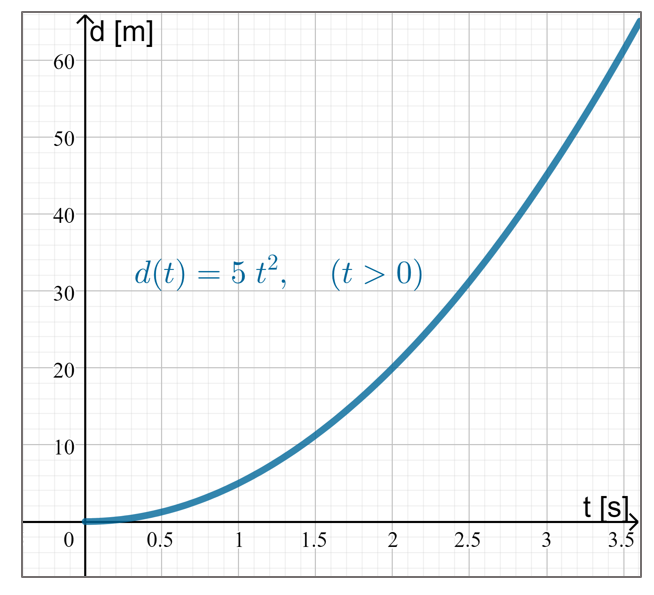
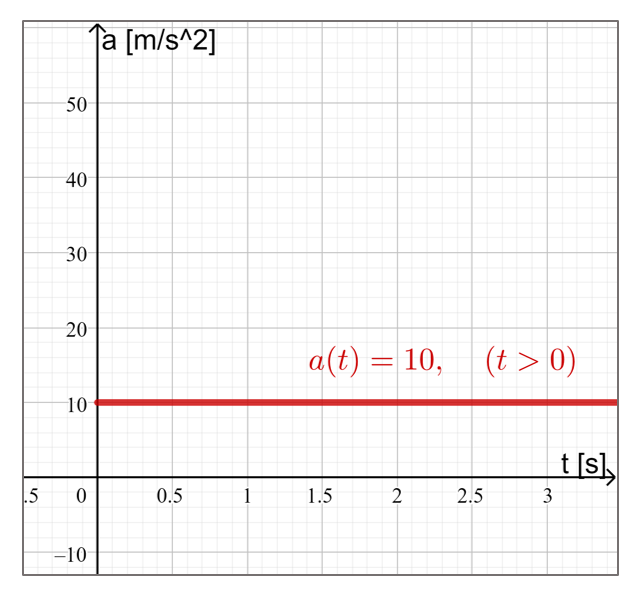
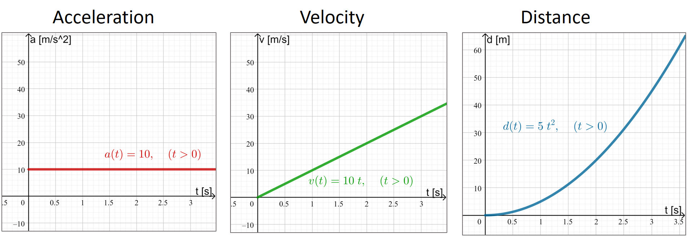
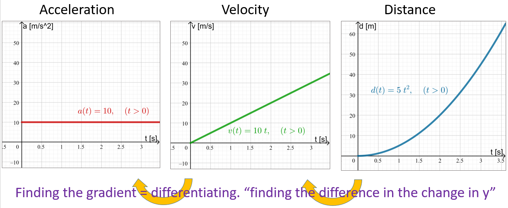
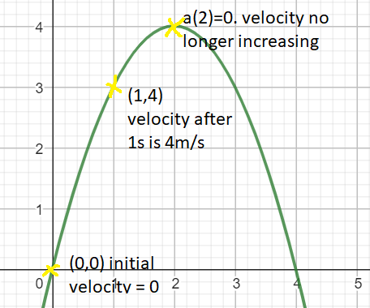
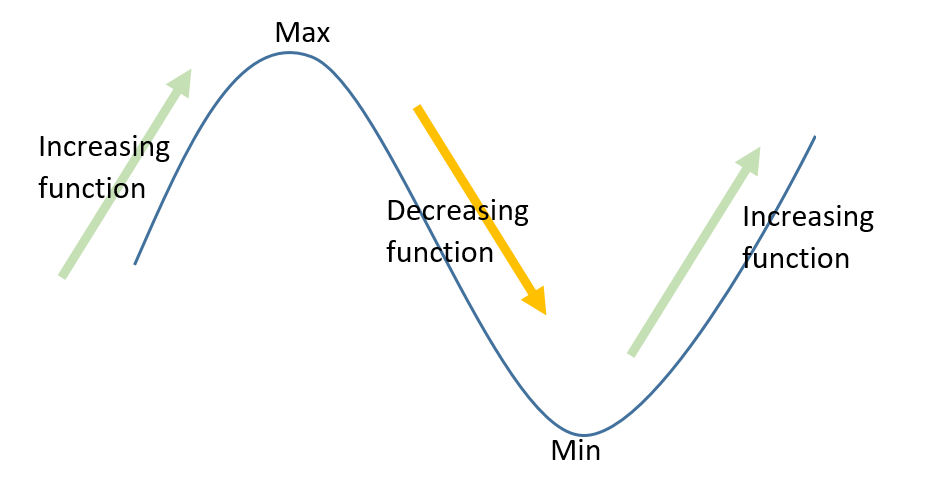

4 Differentiation
In the previous section we looked at how to model growth mathematically, either with exponential functions in a continuous setting or sequences in a discrete setting. It would be useful to have a way to quantify how fast something was growing, and for that we turn to calculus.
4.1 Motivation
Consider the following scenario. You are standing on a bridge, holding a stone that you then drop. You might not be able to picture it exactly, but you might have the intuition that although it starts by falling quite slowly, it accelerates and becomes faster and faster in its fall.

The speed at which it falls increases because gravity pulls it towards the ground (centre of the mass of earth). Most of the time we consider the strength of the gravitational pull to be a constant, so the speed at which the stone is accelerating in a linear fashion, i.e. the amount that it speeds up is the same every second. This also means that the increasing speed can be modelled by a linear function (straight line with a positive gradient) and the acceleration by a constant function (a horizontal line).

What about the distance that it travelled down from where you initially held it? This is clearly also increasing. And it is increasing by the speed that it has. So as the speed increases, the rate of that the displacement increases, increases.
How are acceleration, velocity, and distance travelled related?

4.1.1 Intuition
We know that the gradient of a straight line is a constant; the very definition of a straight line is that the \(y\) value increases in a constant fashion. That’s what makes it linear!
A quadratic is a function that increases, increasingly; its rate of change increases in a linear fashion.
Similarly, the arithmetic sequence of numbers \[ 4, 7, 10, 13, 16, \ldots \] increases in a linear fashion by adding \(3\) each time. On the other hand, the sequence \[ 2, 6, 13, 23, 36, 52, \ldots \] increases in a quadratic fashion because it increases first by \(4\), then by \(7\), then \(10\), \(13\), \(16\), and so on by the linear sequence that we just had before.
The gradient (or rate of change) of a quadratic is a linear function.

The rate of change of velocity is called acceleration. The rate of change of distance travelled (sometimes called displacement) is called velocity.
4.2 Differentiation
Calculus is what we call the study of infinitesimal change. This includes differentiation and integration, both of which we will cover over the next couple of sections.
The subject has a really long history and, unfortunately for everyone, there was a historical spat between Gottfried Leibniz and Isaac Newton, two famous scientists of the 17th and 18th century, when calculus was developed.
They both invented (or discovered depending on your philosophy) calculus around the same time and came up with different notations. To top it off, Joseph-Louis Lagrange, another scientist from that era invented yet more notation for the same ideas:
- Leibniz’ notation: \(\frac{\text{d}}{\text{d}x}y\),
- Newton’s notation: \(\dot{y}\),
- Lagrange’s notation: \(y'\).
All three are reasonably common, so it’s good to be aware of them.
4.2.1 Gradient Function
We considered the gradient of a straight line. Now let us generalise this to other types of functions. The derivative at a certain point is the measurement of how much the function increases or decreases at that point. Consider the graph below. Pay attention to how the gradient decreases and increases, where it is negative and where positive.
In a weird twist of events, the value of the gradient/derivative can also be considered as a function in its own right and we call that function, the “gradient function” and denote it \(f'(x)\).
Let us consider this: the gradient of a graph can itself be represented by a graph. Consider again the parabola:
You can see how the gradient function of the parabola is described by a straight line graph. When the gradient of the parabola at its vertex has the value \(0\), its gradient function has the \(y\) value \(0\) (i.e. it intercepts the x-axis). When the parabola is moving up, the straight line has positive \(y-\)coordinates (i.e. it’s above the \(x-\)axis. When the graph moves down (the basketball is falling), then the rate of change of its height is negative, so the gradient function is below the \(x-\)axis.
Now we can consider the graph of a cubic and it’s gradient function (derivative). Move the slider to move point A the cubic graph \(f(x)\) to see the corresponding value of the gradient/rate of change/derivative at that point and the corresponding \(y\) value of the quadratic gradient/derivative function \(f'(x)\).
4.2.2 Straight Lines
You should be able to see that the gradient of the line \(f(x) = x\) has a gradient of 1 as each time it goes “1 across” is also “goes one up”. Note that the graph of \(f'(x)\) is \(f'(x)=1\).
In fact, consider the gradients of the following straight lines. Use the slider to change how steep the lines are and observe the graph and value of \(f'(x)\)
From this you can see that the gradient of \(f(x)=cx\) is going to be \(c\). In fact, you already know this fact if you remember \(y=mx+c\) where \(m\) stands for the gradient and \(c\) stands for the y-intercept, the point on the y-axis where the straight line crosses. Since in our example above this is always at the origin, i.e. \(c = 0\), this means that the gradient function \(f'(x)=m\) for all \(f(x)=mx\).
Suppose \(f(x) = mx+c\). Then \(f'(x) = m\) for all \(x\).
If \(f(x)=5x\) then \(f'(x)=5\).
If \(f(x)=9x\) then \(f'(x)=9\).
If \(f(x)=x+91\) then \(f'(x)=1\).
If \(f(x)=-x\) then \(f'(x)=-1\).
If \(f(x)=\frac{2}{3}x\) then \(f'(x)=\frac{2}{3}\).
4.2.3 Differentiating polynomials
We saw that the gradient of a straight line is a constant (that we usually call “\(m\)”) and which can be represented by a horizontal line \(y=m\). We also argued when talking about acceleration that the gradient of a parabola is given by a straight line (i.e. the gradient increases in a linear manner).
This can be generalised further:
Suppose we have a polynomial of degree \(n\) where \(n\) is a whole number, then its gradient function \(f'(x) = nx^{n-1}\), a polynomial of degree \(n-1\).
Recall that \(x^0 = 1\) for all values of \(x\). From this and the above, we also have that a constant function, \(f(x) = c\) for all \(x\), the gradient is \(f'(x) = {(c\times x^{0})}' = c\times0x^{-1} = 0\) for all \(x\). In other words, the constant function has no gradient.
If \(f(x)=5x^7\), what is \(f'(x)\)?
By the above, the gradient of \(x^7\) is \(7x^{7-1} = 7x^6\). Multiplying this by \(5\) gives that \(f'(x)=35x^6\).
What is the gradient of \(f(x) = 4x^5 + 7x^2 - 8x + 10\)?
We can either apply the above rule to each individual term of the polynomial (e.g. \({(7x^2)}' = 7\times2x^{2-1}=14x\)) or computational software. For example, in Wolfram Alpha using derivative of f(x) = 4x^5 + 7x^2 - 8x + 10 returns \(f'(x) = 20x^4 + 14x - 8\). So the gradient of a polynomial of degree 5 is a polynomial function of power 4.
4.2.4 Generalisation
And this can be further generalised to include cases where \(n\) is not an integer (a whole number, either positive or negative).
\((x^{a})' = ax^{a-1}\) for any \(x>0\) and any \(a\)
What is the gradient of \(y=5x-\sqrt{x}\)?
Since \(\sqrt{x} = x^{0.5}\), it follows from our rules for powers that \[ {(\sqrt{x})}' = x^{0.5-1} = x^{-0.5} = \frac{1}{x^{0.5}} = \frac{1}{\sqrt{x}}. \] Then we have that \(y'=5-\frac{1}{2\sqrt{x}}\).
What’s the derivative of \(f(x) = 4\sqrt{x}+ \frac{7}{x} - \sqrt[3]{x}\)?
We note that this can be written as \(f(x) = 4x^{\frac{1}{2}} + 7x^{-1} - x^{\frac{1}{3}}\). Then by applying to above rule to each term, \[ f'(x) = 4\times\frac{1}{2} \times x^{-\frac{1}{2}} - 7x^{-2} - \frac{1}{3} \times x^{-\frac{2}{3}}. \] This can be simplified to \(f'(x)= \frac{2}{\sqrt{x}}-\frac{7}{x^2} - \frac{1}{3\sqrt[3]{x^2}}\).
4.3 Gradient at a point
Given some function that models the velocity of a aeroplane (or comet’s orbit, a profit curve, etc.), we can find what the velocity is at a certain point of time by substituting a value into the variable. But to know what the acceleration is of the bike, you first need to find the derivative of the function and then substitute the value of the point of time into it.
4.3.1 Speed Examples
Let the velocity of a particle be described by the function \(v(t)=4t-t^2\) where \(v\) is the velocity measured in \(\text{m/s}\)and \(t\) is the time in seconds.
What is the initial velocity?
Initial means that \(t=0\). So you’re looking for \(v(0)\), i.e. the value when substituting \(t=0\) into the function of \(v(t)\).
Here, \(v(0) = 4\times0-0^2 = 0\). We can also type v(t)=4t-t^2 where t=0 into Wolfram Alpha. The initial velocity (speed) is zero meaning that that particle is initially not moving.
What is the initial acceleration?
To find the initial acceleration, \(a(0)=v'(0)\), we first find the derivative to see that \(v'(t)=4-2t\) and then substitute \(t=0\) into this: \[ v'(0) = 4 - 2t = 4 - 2\cdot0 = 4. \] So the acceleration is \(4\text{m/s}^2\). The particle is being accelerated forward, the velocity is increasing.
What is the velocity of the particle after one second?
Substitute \(t=1\) into the function of \(v(t)\) to obtain \(v(1)\). By hand that is \(v(1) = 4 \times 1 - (1)^2 = 3 \text{m/s}\). Through Wolfram Alpha, this would be 4t-t^2 at t=1. The particle now has a positive velocity, meaning that it is moving forward.
What is the acceleration after two seconds?
Substitute \(t=2\) into the acceleration to obtain \(a(2)=v'(2)\). By hand we can do can do \(v'(2)=4-2 \times 2 = 0\). Alternatively, by Wolfram Alpha, find the derivative of v(t)=4t-t^2 at t=2
After two seconds, the acceleration after two seconds is \(0 m/s^2\) meaning that it no longer accelerates the particle. This means that the velocity is no longer increasing.
Pulling all these examples together, here is a graph of the velocity.

4.4 Non-Polynomial Derivatives
This idea of of the derivative giving the gradient can be extended to other functions that we have looked at so far. Before we look at those however, it will be useful to state some rules that will help us.
4.4.1 Differentation Rules
Given two functions, \(f(x)\) and \(g(x)\), there are several key rules for working out what the derivatives of different combinations of those two functions might be.
Given a composition of two functions, \(h(x) = f(g(x))\), then the derivative is given by \[h'(x) = f'(g(x))\times g'(x).\]
Given a product of two functions \(h(x) = f(x)g(x)\), then the derivative is given by \[h'(x) = f'(x)g(x) + f(x)g'(x).\]
Given a ratio of two functions \(h(x) = \frac{f(x)}{g(x)}\), then the derivative is given by \[h'(x) = \frac{f'(x)g(x) - f(x)g'(x)}{g(x)^2}.\]
4.4.2 Trigonometric functions
Consider the gradient of the sine graph. Again, pay particular attention to the places where the gradient of \(\sin(x)\) is equal to zero.
Notice how there are some places where the gradient is zero. What is special about these places? There are some values where the gradient is positive, and some where it’s negative. And this repeats periodically.
What graph or function do you know that has periodicity?
For the trig functions:
- \(y = \sin(x)\) has the derivative \(y' = \cos(x)\)
- \(y = \cos(x)\) has the derivative \(y' = -\sin(x)\)
Given that \(f(x)= 4x + sin(3x)\), find \(f'(x)\).
We know from the above that the derivative of \(\sin(x)\) is \(\cos(x)\), and the derivative of \(3x\) is \(3\). Letting \(f(x) = \sin(x)\) and \(g(x) = 3x\) gives the composition \(f(g(x)) = \sin(3x)\). Then, by the chain rule, the derivative of the composition is\[
f'(g(x))\times g'(x) = \cos(3x)\times 3 = 3\cos(3x).
\] We can also find that by typing in differentiate f(x) = 4x + sin(3x).
The height of the tide in a harbour can be modelled by the graph \(H(t)=4.8 \sin(\frac{\pi}{6}(t+3)) + 5.1\) where \(H(t)\) is measured in metres and \(t\) is measured in hours after midnight. What is the curve that models the rate of change in the tide?
The rate of change (i.e. how rapidly the tide comes in and flows out) is given by \[H'(t)= -2.5132\times\sin\left(\frac{\pi}{6}t\right).\]
4.4.3 Exponentials
Remember when we considered Douglas’ coffee cooling down from a fictional \(100^{\circ}\text{C}\)? Initially, the rate at which is was cooling down was quite rapid. This was because the difference between the temperature of the coffee and the surrounding air was great.

As the difference between the temperature of the coffee and the surrounding air became smaller (decreased), the rate at which the coffee continued to cool down slowed down.
As the coffee neared the temperature of the surrounding air, a fictional \(21^{\circ}\text{C}\), the coffee would stop cooling down as there was now very little difference between its temperature and the ambient temperature.
Consider the following interactive graph. Move the point A. As time increases, the \(y\) “Temperature” value decreases as the temperature of the tea is decreasing. The gradient is therefore negative (you can see the value).
The gradient function is represented by the blue graph. You can see that it remains below the \(x-\)axis even as it comes closer and closer to the \(x-\)axis. This represents the fact that although the tea (or coffee) keeps getting colder (as it approaches the ambient temperature), the rate of decrease becomes more and more smaller.
You might be able to see that, even if the blue graph is upside down, it has the same general shape as the green graph which represents the temperature of Douglas’ coffee. In fact, the gradient of an exponential function is another exponential function. The rate of change of a quantity that increases or decreases in an exponential fashion is itself exponential.
Let \(y=2^x\). Use the command differentiate y=2^x to obtain the answer: \(y'=2^x log(2)\) or if you use the approximate values: \(y' =0.693147 2^x\).
Let \(f(x)=18 \times 9.1x^{3x}+7x\). Use the command differentiate f(x)=18 9.1^(3x) +7x to obtain \(f'(x) = 119.247 \times 9.1^{3x} + 7\).
4.4.4 Natural exponentials
We talked about the natural exponential function in a previous week. Part of what makes these particularly important for growth models from biology or economics is the following property.
If \(y = e^x\), then \(y' = e^x\) also. That is, the natural exponential is a function where the graph of the function and the graph of its gradient are the same.
We can then combine this with the other rules to work out exponential derivatives.
Let \(h(x)=18 \times e^{3x}+11\). This can be differentiated using the chain rule, where \(f(x) = 18e^x + 11\) (so \(f'(x) = 18e^x\)) and \(g(x) = 3x\) (so \(g'(x) = 3\)).
We get \[ h'(x) = f'(g(x))g'(x) = 18e^{g(x)}\times3 = 54e^{3x}. \]
Let \(y = 4 - 5e^{\frac{1}{2}x}\). Find the value of the gradient of this function when \(x = 9\). Use differentiate 4 - 5*exp(-0.5x) at x=9 to obtain -(5 e^(9/2))/2, or the approximate form: \(-225.043\).
4.5 Optimization
Optimization is the process of finding the maximum and/or minimum value of a function. If the function is posed as part of a problem, such a value is often referred to as the optimal solution.
4.5.1 Extrema
When we studied parabolas we looked at the maximum or minimum value that the vertical value of a graph could take by finding the vertex (e.g. the height of a thrown basketball). Now we can generalise this because differentiation allows us to find these points for many more graphs.
To find the maxima (plural of maximum) or minima (plural of minimum) of a graph you need to consider what is happening to the function’s gradient.
Look again at the graph above. You can see that at the extrema (maxima or minima), the graph “turns around” (one reason we call them turning points also). Either the graph is going down and then back up or it is increasing and then, after the turning point, decreasing again.

These maxima and minima are the points where the gradient is zero, so can be found by solving \(f'(x) = 0\).
4.6 Higher Order Derivatives
Think back to our example of acceleration \(a(t)\), velocity \(v(t)\), and distance \(d(t)\). There we talked about how velocity was the rate of change in distance with respect to time, and how acceleration was the change in velocity with respect to time. With this, can we connect acceleration and distance?
Since \(v(t) = d'(t)\) and \(a(t) = v'(t)\), we could substitute the first equation into the second to get that \[ a(t) = (v(t))' = (d'(t))'. \] In other words, we define acceleration b as the derivative of the derivative of the distance with respect to time. This is what is called a second derivative.
In the various notations discussed earlier these would be:
- Leibniz’ notation: \(\frac{\text{d}^2}{\text{d}x^2}y\),
- Newton’s notation: \(\ddot{y}\),
- Lagrange’s notation: \(y''\).
We can extend this idea to the \(n^{\text{th}}\) derivative (i.e. what comes after taking the derivative of a function \(n\) times). This is usually denoted by \(f^{(n)}(x)\) or \(\frac{\text{d}^{n}y}{\text{d}x^n}\) since the other two notations get complicated for \(n>3\).
The main use of higher derivatives is to find whether given extrema are maxima or minima without having to graph the function. If \(f''(x) > 0\), the point at \(x\) is a minimum. If \(f''(x) < 0\), the point is a maximum.